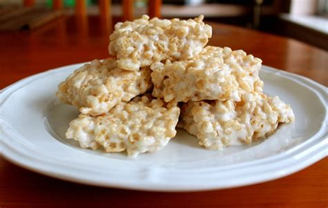

Home
Ultimate Brown Butter Rice Krispies Treats

Recipe Description
With brown butter, toasted milk powder, and generous amounts of vanilla and salt, this is not your average Rice Krispies treats recipe. This serves as the perfect base base recipie for all of your rice krispies treats and can be easliy modified to create the perfect treat no matter the occasion! After the first batch, I recommend experimenting with brown sugar and maple syrup.
Ingredients
- 8 tbsp (113 grams) unsalted butter
- 1/4 cup (25 grams) dried whole milk
- 1/4 tsp (rounded) table salt
- 2 tsp pure vanilla extract
- 10 cups (430 grams) mini marshmallows, divided
- 7 cups (196 grams) crispy rice cereal
Steps
- Lightly grease the bottom and sides of an 8" square pan. Set aside.
- n a large saucepan over medium heat, melt the butter until it begins to brown. Look for the butter to foam and sputter then start to show some brown bits at the bottom, about 3 minutes after it has melted.
- Turn the heat to low. Add the milk powder and use a flexible spatula to incorporate, stirring constantly and making sure to clean the bottom and sides of the pan so the milk powder doesn't burn. Cook until copper in color, about 1 to 2 minutes.
- Once the butter and milk powder are browned, turn off the heat and stir in the salt, vanilla, and 9 cups (387g) of the mini marshmallows. Stir to combine. Turn the heat back on low, stirring constantly, to fully melt the marshmallows.
- Once the marshmallows are fully melted, turn off the heat and remove the saucepan from the burner. Fold in the remaining 1 cup (43g) mini marshmallows. Fold only a couple times — the goal is not to melt the last addition of marshmallows.
- Add the cereal and stir until fully combined.
- Working quickly, scrape the marshmallow and cereal mixture into the prepared pan. Use the spatula to press and compact the mixture evenly into the pan.
- Let the Rice Krispies treats cool in the pan until they're room temperature, about 1 hour.
- Store leftover Rice Krispies treats in an airtight container at room temperature for a week.